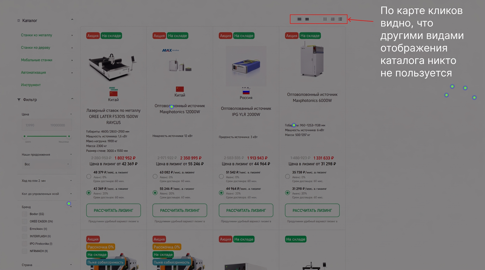

Сценарий 1: пользователь пришёл из рекламы на карточку товара.
Его задача: понять цену, характеристики, наличие и оставить заявку.
Задача — сделать внешний вид сайта более современным и повысить конверсию в заявку.
Я переработала ключевые страницы B2B e-commerce сайта. На основе данных Яндекс Метрики убрала неиспользуемые элементы, усилила CTA, добавила навигацию по разделам и sticky-header. Основной фокус — упростить выбор промышленных станков и повысить доступность заявки/покупки.
Его задача: понять цену, характеристики, наличие и оставить заявку.
Его задача: быстро отфильтровать станки, сравнить параметры и перейти в карточку.
Его задача: перейти в нужный раздел и сузить выбор.

Я не сильно меняла UI сайта, потому что ЦА довольно консервативная. Упор делался на редизайн карточки товара и листинга, так как туда обычно ведет реклама из рекламной сети Яндекса.
Пользователь сможет быстрее перейти к покупке или заявке, не возвращаясь вверх страницы. Это должно снизить трение на этапе принятия решения. Лизинг оставлен как вторичный аргумент покупки.
Разделы каталога, вынесенные отдельными кнопками, ускорят поиск нужного оборудования. Раньше можно было выбирать варианты отображения каталога в листинге, но мы это убрали, так как данная функция, судя по Яндекс Метрике, не пользовалась спросом и работала не совсем корректно.
Карточки были перегружены деталями и радиокнопками. Я оставила ключевые характеристики, цену, лизинг и основные CTA, чтобы карточки быстрее сканировались.
Была переделана шапка сайта. Теперь она всегда видна на экране, чтобы пользователь в любой момент мог перейти в другой раздел сайта, не проматывая страницу наверх.
Новый хедер всегда виден на странице и уменьшается, когда пользователь спустился вниз по странице.
Упор делался на карточку товара и листинг, но помимо этого я сделала UI-kit для всего сайта и обновила и другие страницы.
Если бы была возможность, я бы отслеживала CTR по CTA, конверсию в заявку, глубину просмотра карточки и взаимодействие с категориями.